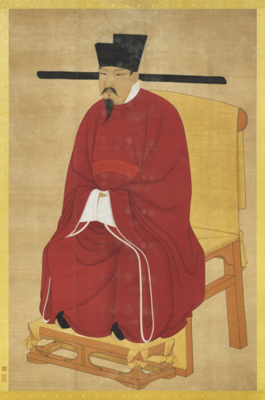
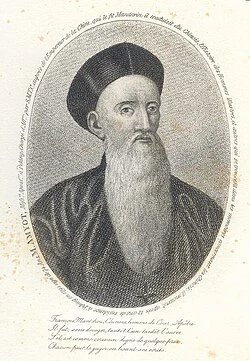
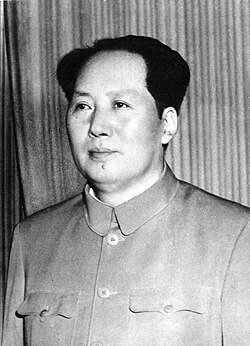

L’Art de la guerre est un court traité de stratégie militaire
chinois, datant de la période des Printemps et Automnes. Attribué au stratège Sun Zi, le texte
s’articule autour de treize chapitres consacrés à l’analyse rationnelle des différentes dimensions
de la guerre et qui dégagent les principes de la poursuite intelligente d’une guerre victorieuse :
fondée sur une stratégie indirecte, toute d’économie, de ruse, de connaissance de l’adversaire,
d’action psychologique, destinée à ne laisser au choc que le rôle de coup de grâce asséné à un
ennemi désemparé.
La période des Printemps et Automnes ou période Chunqiu désigne, dans l'histoire de Chine, la première partie de la dynastie des Zhou orientaux
, c'est-à-dire une période allant d'environ 771 à 481/453 av. J.-C.
Drapeau Chine impériale
L’Art de la guerre est l’élément fondamental d’un riche corpus de réflexion stratégique
compilé en 1078, à l’instigation de l’empereur Shenzong de la dynastie Song, sous le
titre des Sept classiques de l’art militaire.

Empereur Shenzong
L'Empereur Shenzong (25 mai 1048 – 1er avril 1085) est le sixième empereur de la dynastie
Song en Chine. Son vrai nom est Zhao Xu. Il a régné de 1067 à sa mort en 1085.
IMPACT
Drapeau Chine
L’Art de la guerre a exercé une influence considérable sur les traditions militaires
chinoises et japonaises, et il est toujours enseigné en Chine, à Taïwan et dans l’ensemble des
écoles militaires du monde sinisé ; il constitue le fondement de la pensée stratégique
contemporaine en Asie.
PERSONNAGES IMPORTANTS
L’œuvre est traduite en 1772 par le père jésuite français Joseph-Marie Amiot et connaît un
grand succès avant de tomber dans l’oubli. La traduction en anglais par Lionel Giles en
1910, puis la victoire de Mao Zedong en 1949, ramènent l’attention sur ce manuel de
stratégie indirecte.

Joseph-Marie Amiot
Joseph-Marie Amiot, né le 8 février 1718 à Toulon (France) et
décédé le 8 octobre 1793 à Pékin (Chine), est un prêtre jésuite, astronome et historien
français, missionnaire en Chine.
Lionel Giles
Lionel Giles (29 décembre 1875 – 22 janvier 1958) est un sinologue, écrivain et
philosophe britannique. Lionel Giles est conservateur adjoint au British Museum
et conservateur du département des manuscrits et livres imprimés orientaux. Il est surtout connu
pour ses traductions de 1910 de L'Art de la guerre de Sun Tzu et des Entretiens de
Confucius.

Mao Zedong
Mao Zedong, également appelé en français sous la transcription de Mao Tsé-toung, issue du système Wade-Giles, ancien système de romanisation du mandarin est un
homme d'État et chef militaire chinois né le 26 décembre 1893 à Shaoshan (province
du Hunan) et mort le 9 septembre 1976 à Pékin. Fondateur de la république populaire de
Chine, il en a été le principal dirigeant de 1949 à sa mort.